DX-20S 用户手册
01认识本设备
它是什么：一台随身携带的行车安全信息终端。它持续监听周围车头电台发出的行车信息， 收到后自动在屏幕上显示车次、速度、所在线路、里程位置等内容，并按您选择的方式发出声音或振动提醒。 它只接收、不发射，不需要任何操作即可自动工作。
按键与作用
| 按键 | 主界面下 | 菜单界面下 |
|---|---|---|
| K1（菜单/返回） | 进入功能菜单 | 返回上一级；在菜单最外层长按效果为退出菜单 |
| K2（上翻） | 回看更早的消息 | 选项向上移动 |
| K3（下翻） | 回看更新的消息 | 选项向下移动 |
| K4（确认/监听） | 回到“等待接收”监听界面 | 确认当前选项 |
| 电源键 | 开关机；点亮/熄灭屏幕 | |
指示灯
- 充电指示灯：充电时亮起，充满后熄灭或变色（以实物为准）。
- 充满指示灯：电量充满时亮起。
02开机、关机与充电
开机
- 长按右侧电源键，屏幕点亮并播放开机音效。
- 设备先进入校时尝试阶段，此时屏幕左下角显示 NTP（见第八章“时间设置”）。
- 数秒至一分钟后自动转入正常接收状态，左下角变为 RX，开始持续监听。
关机
在开机状态下长按电源键即可关机。屏幕熄灭即已关机。
充电
- 充电时屏幕右上角电池图标内显示充电标志，同时充电指示灯亮起。
- 充电时温度适当升高属正常现象；充电时请留人值守。
- 长期满电存放会诱发电池鼓包。长期不用时请勿满电存放，并每月补充一次电。
- 电池过放后需连接充电器重新激活，激活过程不建议同时使用。
低电量与自动关机
- 电量偏低时，屏幕左下角会显示 低电量!，同时振动功能被自动关闭（避免反复重启），请立即充电。
- 电量极低时，设备发出几声提示后自动关机；此项行为可在菜单中关闭（见 10.1）。
- 温度过高时设备会自动关机保护，降温后可重新开机。
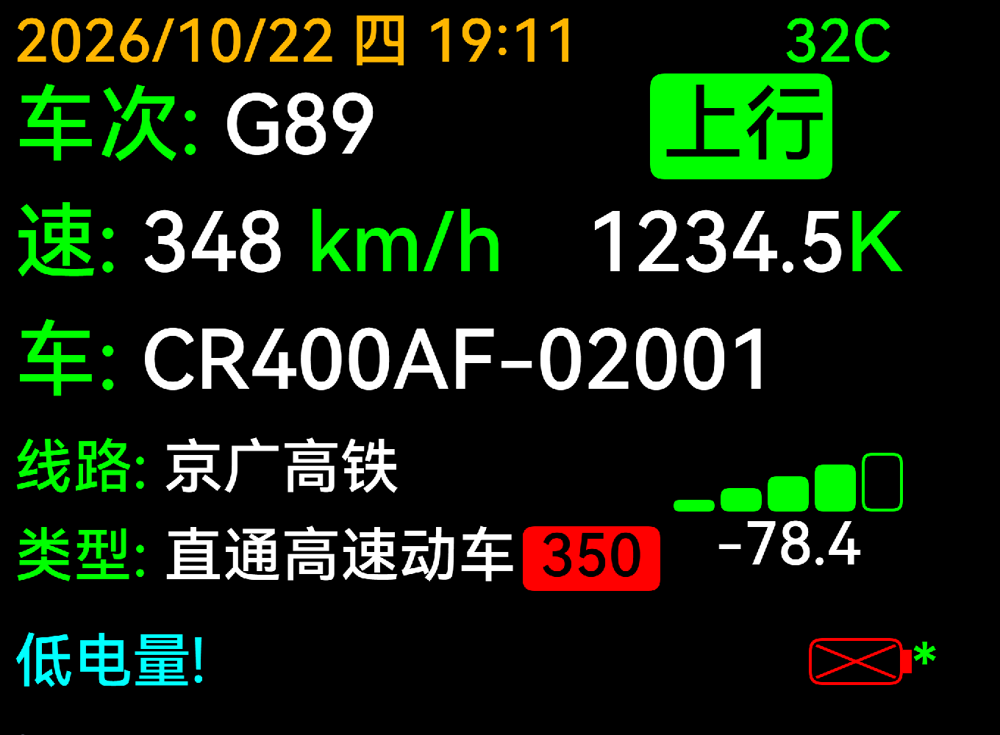
03主屏幕怎么看
主屏幕自上而下分为三个区域：顶部状态栏、中间信息区、底部操作栏。
顶部状态栏
- 左侧显示日期、时间、星期；右侧显示机身温度。
- 回看历史消息时，左侧改为显示该条消息的收到时间，并以 @ 开头（见图 3-4）。
三种消息版式
根据收到的信息类型，屏幕自动切换三种版式。显示什么内容由发送方决定，与设备设置和品质无关。
① 新版信息（内容最全）
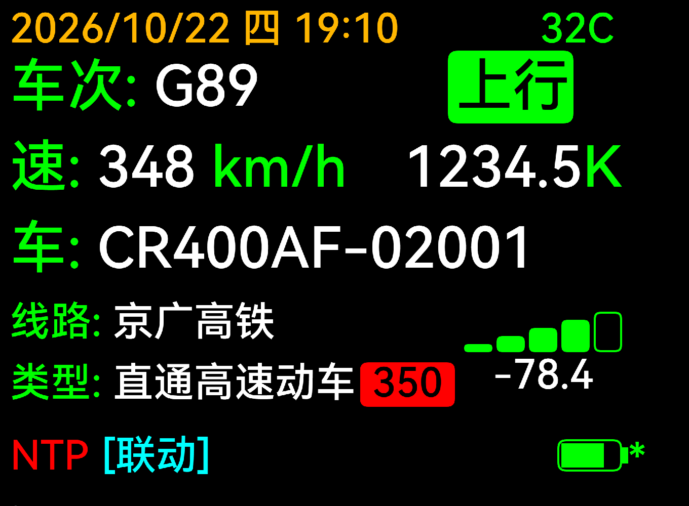
| 行 | 含义 |
|---|---|
| 日期-时间-温度 | 设备当前时间与机身温度 |
| 车次 | 车次识别符 + 车次号数字 + 运行方向（右上角色块） |
| 速度 / 里程 | 本车速度（千米每小时）与所处里程位置（千米） |
| 车头编号 | 车头类型-编号；类型无法识别时显示 3 位类型编码 + 5 位编号 |
| 运行线路 | 多数为车头注册的运行线路，有时为车头运行状态（如直通模式、库检测试） |
| 类型 | 由车次号推算的列车类别，属扩展显示，可在“显示元素”中关闭 |
② 旧版信息（内容较少）
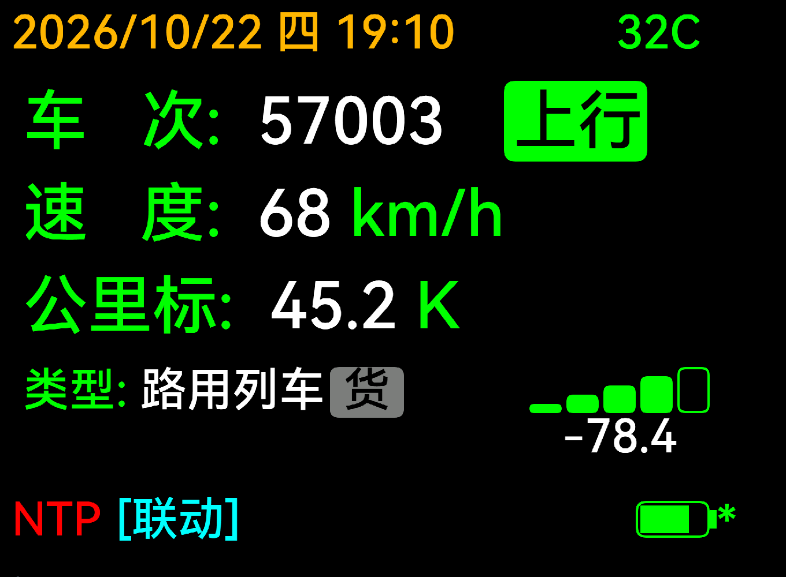
发送方未升级时只能收到旧版内容，显示车次、速度、里程位置与方向，字段更少，属正常现象。
③ 时间信息
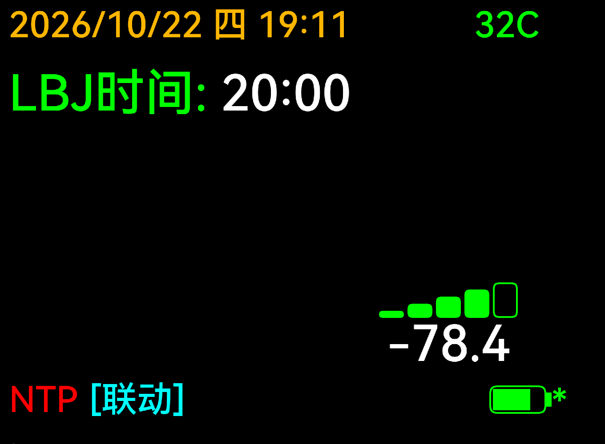
底部操作栏
| 显示 | 含义 |
|---|---|
| NTP | 开机后的校时阶段，正在尝试自动对时；周围无可用的校时热点时会自动跳过 |
| RX | 正常接收模式，持续监听并显示新消息 |
| 回看: 0000/2K | 历史消息回看模式，格式为“条目序号/2000 条容量” |
| 低电量! | 电量偏低，需尽快充电 |
| [静音]/[声音]/[震动]/[联动] | 当前播报模式（见第六章） |
三个小标志
| 标志 | 含义 |
|---|---|
| [K] | “公里标过滤”已启用，只提醒设定范围内的消息 |
| [C] | “条件过滤”中至少启用了一项消息过滤 |
| [X] | “自动频率校正”处于关闭状态 |
图标含义
| 图标 | 含义 |
|---|---|
| 方向色块（绿/红） | 默认主题下绿色=上行、红色=下行；换主题后颜色随之改变（见图 3-2 右上角） |
| 信号塔（5 格） | 收到该条消息时的信号强度：格越少越弱；颜色由红→橙→绿表示由弱到强。可在“显示元素”中关闭 |
| 电池图标 | 剩余电量。电量低时变红并出现红叉；显示 * 表示开启了低功耗模式；充电时显示充电标志与电压 |
| 等级徽标（彩色小块） | 位于“类型”右侧，用数字或文字标注车次等级（如 350、120、货、行包），颜色由红到紫对应由高到低；仅在“新版”类型分类下显示（见 7.3） |
04消息来了怎么处理
收到新消息
- 屏幕自动刷新为该条消息内容，同时按当前播报模式发出声音或振动。
- 先看右上角方向色块：绿色=上行、红色=下行，判断来车方向。
- 看速度与里程位置，结合自身位置判断距离。
- 按 K4 返回“等待接收消息”监听界面，继续等待下一条。
回看历史消息
在监听界面按 K2 向前翻看更早的消息，按 K3 向后翻看更新的消息，循环翻页。 回看时顶部显示该条消息的收到时间（带 @），底部显示 回看: 序号/2K。
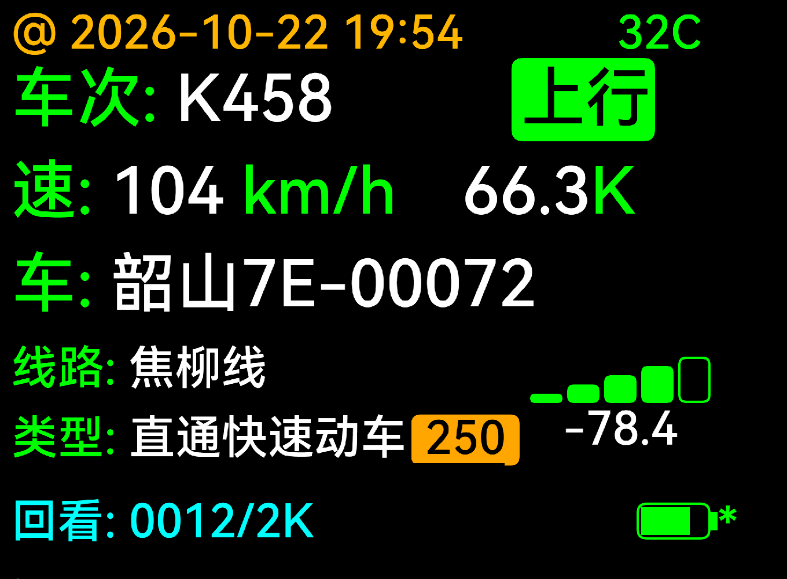
05功能菜单总览
在监听界面按 K1 进入功能菜单。菜单共 3 页 13 项，常用功能排在前面。 操作方式：K2/K3 选择，K4 确认，K1 返回。 在本页顶部越界继续翻页，可在三页之间循环切换。
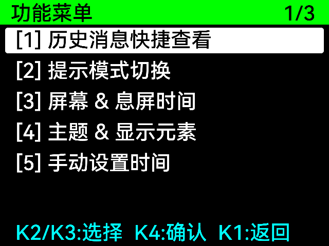
06提示模式与音效
进入：功能菜单第 1 页 → [2] 提示模式切换。本页决定设备“用什么方式提醒您”。 无源蜂鸣器版本（本机）本页共 7 项，最后一项进入“音效设置”；有源蜂鸣器版本为 6 项，没有“音效设置”（见 6.4）。
四种提示模式
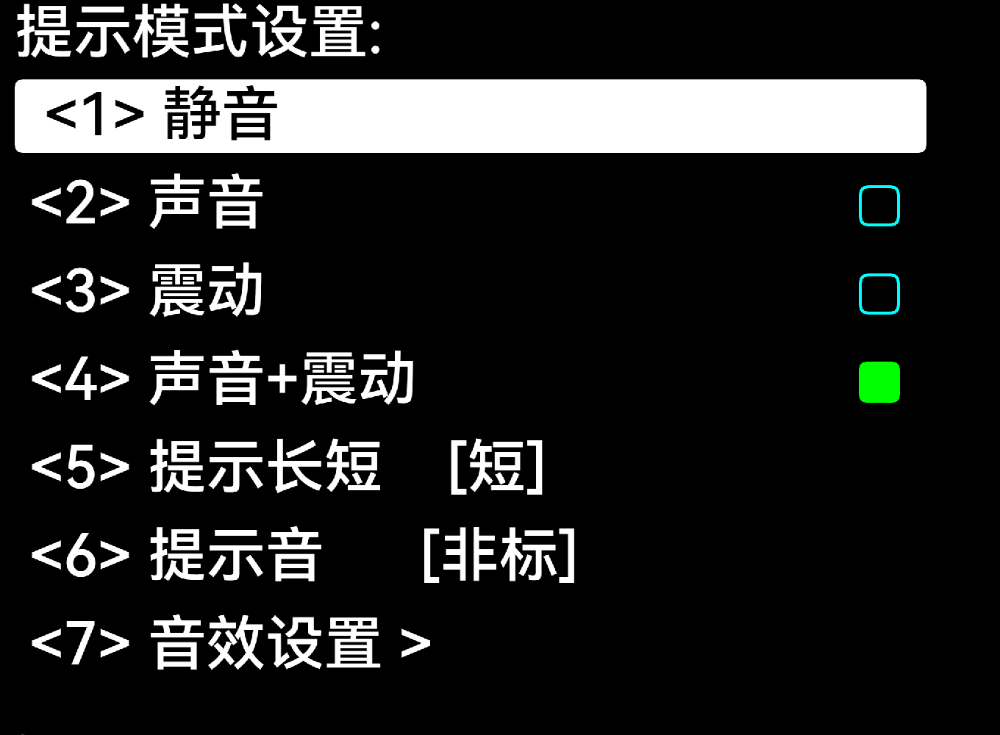
| 模式 | 收到新消息 / 按键时 | 适合场景 |
|---|---|---|
| <1> 静音 | 完全静默，仅屏幕显示 | 会议、夜间、需要安静的场合 |
| <2> 声音 | 蜂鸣器鸣响，不振动 | 嘈杂环境 |
| <3> 震动 | 蜂鸣器静默，机身振动 | 安静环境、随身携带 |
| <4> 声音+震动 | 蜂鸣器与振动同时（出厂默认） | 一般室外作业 |
设置方法：用 K2/K3 选中某一项，按 K4 确认，右侧立即出现实心方块标记，设置当场生效。
提示长短与提示音规范
| 设置项 | 可选值 | 说明 |
|---|---|---|
| <5> 提示长短 | 短 / 长 | “长”在自定义音效下将提示时长延长为 4 倍，更容易察觉；国标提示音时长由规范固定，不受此项影响 |
| <6> 提示音 | 非标 / 国标 | “非标”为设备自定义旋律（可在音效设置中改音调）；“国标”为行业统一节拍音 |
音效设置（两级页面）
在提示模式页选 <7> 音效设置 进入，可分别调整每种提示音的音调，调整时会立即试听。 本页为无源蜂鸣器版本专属（见 6.4）。
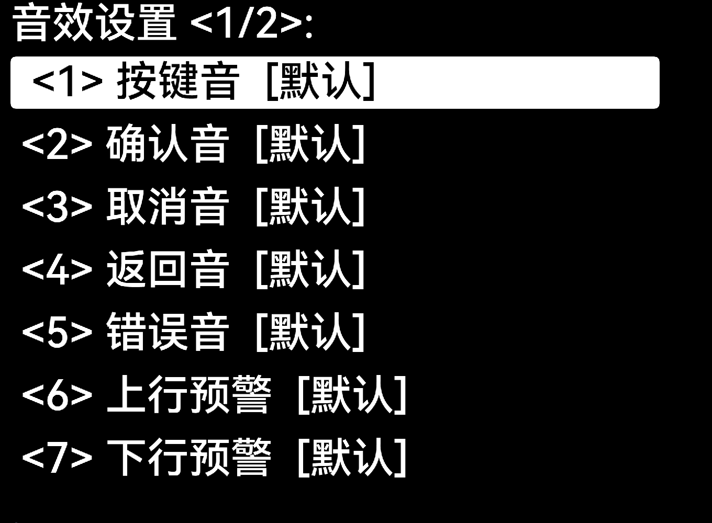
第 1/2 页：各类提示音音调
可分别为按键音、确认音、取消音、返回音、错误音、上行预警、下行预警选择 高音 / 中音 / 低音 / 默认（默认为内置旋律）。选中后按 K4 循环切换并试听。
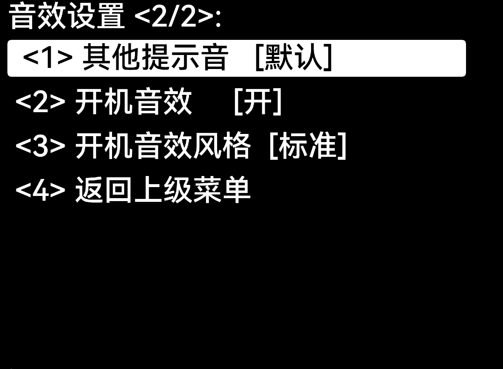
第 2/2 页：其他提示音与开机音效
| 设置项 | 可选值 |
|---|---|
| <1> 其他提示音 | 高音 / 中音 / 低音 / 默认 |
| <2> 开机音效 | 开 / 关 |
| <3> 开机音效风格 | 标准 / 欢快 / 经典 |
| <4> 返回上级菜单 | — |
- 按键音：极短促的一声
- 确认音：两声由低到高（上行双音）
- 返回音 / 取消音：两声由高到低（下行双音）
- 开机音效：明亮上扬的双音，可换“欢快”“经典”风格
- 故障提示音：连续数声低沉短鸣，表示射频部分异常
- 上行来车：两声上扬提醒；下行来车：一声较长提醒；其他/时间消息：单声提醒
两种蜂鸣器与功能差异
设备内部的蜂鸣器分 有源 与 无源 两种规格。本机当前为无源蜂鸣器版本， “提示模式切换”中共有 7 个设置项，且带完整的“音效设置”子页。 如果您持有的是有源蜂鸣器版本，菜单与声音效果会按右表变化——这不是故障，两种规格的功能差异如下：
| 项目 | 无源蜂鸣器（本机） | 有源蜂鸣器（部分版本） |
|---|---|---|
| 声音特点 | 可播放不同音高的旋律，各类提示音旋律各不相同 | 只能发出固定音高的“嘀”声，无旋律变化 |
| 提示模式页菜单项 | 7 项（含 <7> 音效设置） | 6 项（没有“音效设置”） |
| 提示音音调（高/中/低音） | 可在音效设置中逐类调整，立即试听 | 无此设置项，所有提示音同为一种音调 |
| 开机音效 | 可开关，可切换 标准/欢快/经典 三种风格 | 固定鸣响，不可关闭、不可换风格 |
| 提示长短（长/短） | 有效，“长”将提示时长延长为 4 倍 | 有效，同样控制鸣响时长 |
| 提示音规范（非标/国标） | 有效，两类节拍不同 | 有效，两类节拍不同 |
07屏幕与主题
屏幕 & 息屏时间
进入：功能菜单第 1 页 → [3] 屏幕 & 息屏时间。
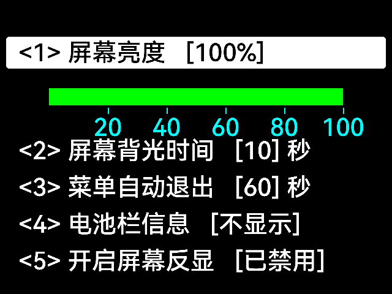
| 设置项 | 可选值（按 K4 循环） | 出厂默认 |
|---|---|---|
| <1> 屏幕亮度 | 20% / 40% / 60% / 80% / 100% | 100% |
| <2> 屏幕背光时间 | 3 / 5 / 10 / 15 / 30 / 60 秒 | 10 秒 |
| <3> 菜单自动退出 | 30 / 60 / 120 秒 | 60 秒 |
| <4> 电池栏信息 | 电池电压 / 预估电量 / 不显示 | 不显示 |
| <5> 开启屏幕反显 | 已启用 / 已禁用 | 已启用 |
操作方法：K2/K3 选择项目，K4 循环切换档位，屏幕当场生效。 “屏幕背光时间”指无操作多久后自动熄屏；“菜单自动退出”指在菜单里无操作多久后自动回到监听界面。
主题 & 显示元素
进入：功能菜单第 1 页 → [4] 主题 & 显示元素。该菜单分两页。
第 1 页：主题选择（8 款）
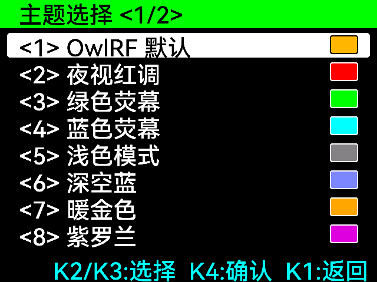
| 主题 | 观感 | 主题 | 观感 |
|---|---|---|---|
| OwlRF 默认 | 黑底多彩，信息层次最丰富 | 浅色模式 | 白底黑字，光线强的环境更清晰 |
| 夜视红调 | 全红显示，不扰眠、不招虫 | 深空蓝 | 深蓝底，柔和不刺眼 |
| 绿色荧幕 | 经典终端绿光 | 暖金色 | 黑底金字，复古耐看 |
| 蓝色荧幕 | 青蓝冷光 | 紫罗兰 | 紫灰配色，个性鲜明 |
设置方法：K2/K3 选择，按 K4 立即切换并保存，全界面颜色当场改变。
第 2 页：显示元素开关
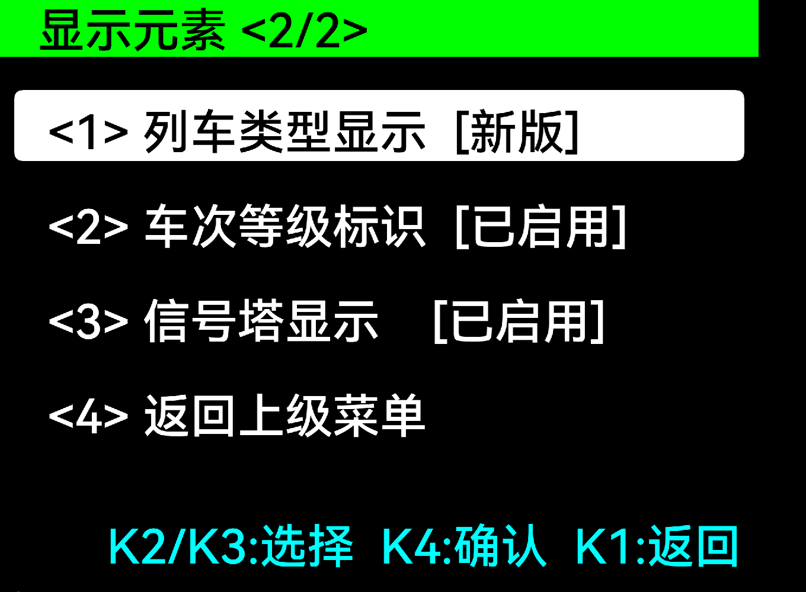
| 设置项 | 可选值 | 出厂默认 |
|---|---|---|
| <1> 列车类型显示 | 已关闭 / 旧版 / 新版 | 新版 |
| <2> 车次等级标识 | 已启用 / 已禁用 | 已启用 |
| <3> 信号塔显示 | 已启用 / 已禁用 | 已启用 |
| <4> 返回上级菜单 | — | — |
列车类型显示：旧版与新版
“列车类型显示”有 已关闭 / 旧版 / 新版 三档，决定主屏幕“类型:”一行按哪套规则把车次翻译成文字。 两套规则对特殊作业列车（试验、检测、回送、折返、机车出入库等，如 SY、DJ、0D 开头）和 纯数字车次（货运、单机、路用列车等）的分类完全相同，差异集中在常见客运车次与货运班列上。
如何切换
- 进入功能菜单第 1 页 → [4] 主题 & 显示元素，按提示翻到第 2/2 页。
- 用 K2/K3 选中 <1> 列车类型显示。
- 每按一次 K4 循环切换一档：已关闭 → 旧版 → 新版 → 已关闭，屏幕上的类型行当场变化，设置自动保存。
- 选已关闭时主屏幕不再显示“类型”行（“车次等级标识”同时失效）。
两套规则的差异（举例）
| 车次 | 新版显示 | 旧版显示 | 说明 |
|---|---|---|---|
| G89 | 直通高速动车 | 直通高速动车组 | 新版按号段细分为“直通 / 管内”，名称更简短；旧版统称“直通高速动车组”“管内高速动车组”，加班车再加“临”字 |
| G5602 | 管内高速动车 | 管内高速动车组 | |
| D3106 | 管内动集动车 | 直通动车组 | |
| Z18 | 直通客车 | 直通直达特快 | |
| T232 | 直通特快动车 | 直通特快 | |
| X8805 | 新高速动车组 | 中欧班列 | 字头含义已调整：新版 X 字头为复兴号动车组，货运班列改到 B 字头；旧版 X 字头为货运班列 |
| 0D1234 | 动车组回送 | 动车组回送 | 两位特殊字头两版相同 |
| 57003 | 路用列车 | 路用列车 | 纯数字车次两版相同 |
新版即依据《列车运行图编制管理规则》（铁运〔2026〕74 号）的现行分类，是出厂默认； 旧版为上一代规则，保留供对照旧资料使用。两版都只是参考信息，以车头实际发送内容为准。
与“车次等级标识”的联动
- 等级徽标（类型行右侧的彩色小块）只在“新版”分类下显示：需同时满足“列车类型显示 = 新版”且“车次等级标识 = 已启用”。
- 徽标内容为速度等级（如 350/200/120）或类别（货/行包/动货），颜色由红到紫对应等级由高到低，便于一眼分辨快慢。
- 回送、折返、试验、检测等特殊作业列车不显示徽标，属正常现象。
- 切到“旧版”或“已关闭”时徽标自动隐藏，无需单独关闭“车次等级标识”。
08时间设置
方式一：手动设置时间
进入：功能菜单第 1 页 → [5] 手动设置时间。屏幕显示 6 个数字框：年（后两位）、月、日、时、分、秒。
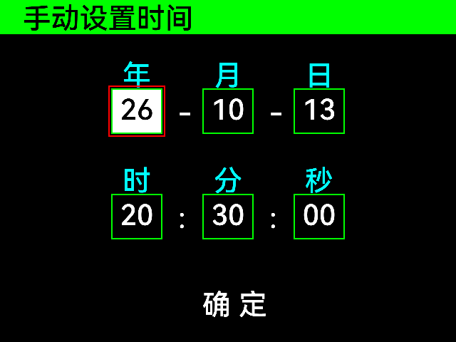
- 进入页面时自动填入当前时间，红框停在第一位（年）。
- 按 K2 / K3 调整当前位的数字（加/减，可循环）。
- 按 K4 移动到下一位；各位调完后继续按 K4，红框移到“确定”按钮。
- 在“确定”上按 K4，新时间生效并自动返回。
- 随时可按 K1 放弃修改并返回。
方式二：自动设置时间（开机自动对时）
设备每次开机都会自动尝试对时，无需任何操作：
- 开机后屏幕左下角显示 NTP，表示正在对时。
- 此时设备会自动搜索附近可用的网络时钟源并完成对时。
- 对时成功或超时后，左下角自动变为 RX，进入正常接收。
09历史消息与回看
设备最多保存 2000 条历史消息，存满后自动覆盖最早的条目。
历史消息快捷查看
进入：功能菜单第 1 页 → [1] 历史消息快捷查看。每屏列表显示 5 条，从最新一条开始。
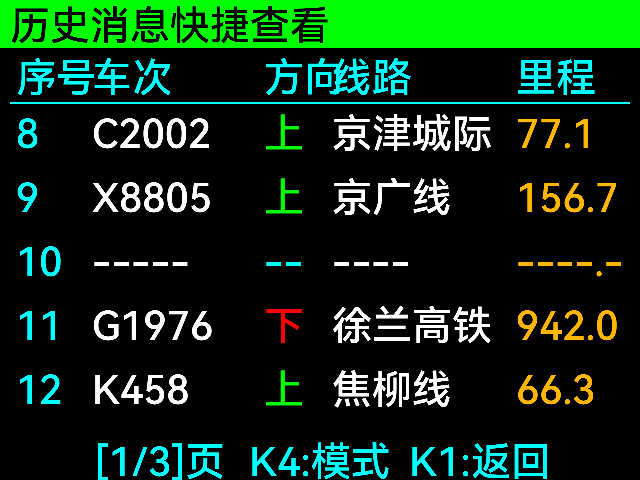
- K2 翻向更早的消息，K3 翻向更新的消息，循环翻页。
- K4 切换显示模式，K1 返回。
- 底部显示当前页码，如 [1/3]页。
五种显示模式（按 K4 循环选择）
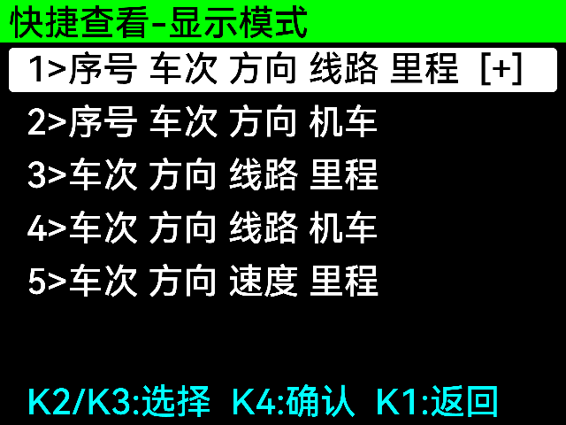
| 模式 | 显示列 |
|---|---|
| M1 | 序号 · 车次 · 方向 · 线路 · 里程 |
| M2 | 序号 · 车次 · 方向 · 车头编号 |
| M3 | 车次 · 方向 · 线路 · 里程 |
| M4 | 车次 · 方向 · 线路 · 车头编号 |
| M5 | 车次 · 方向 · 速度 · 里程 |
历史条目索引（按序号直达）
进入：功能菜单第 2 页 → [9] 历史条目索引。输入 4 位序号即可直接跳到该条消息。
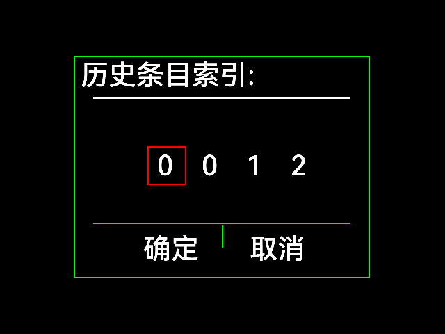
- K2/K3 在 4 个数字位与“确定/取消”之间移动，红框指示当前位置。
- 在数字位上按 K4 循环调整该位数字（0~9）。
- 输入完成后选择“确定”，屏幕显示该条消息的详细内容。
删除历史消息
进入：功能菜单第 3 页 → [12] 删除历史消息，弹出确认框。
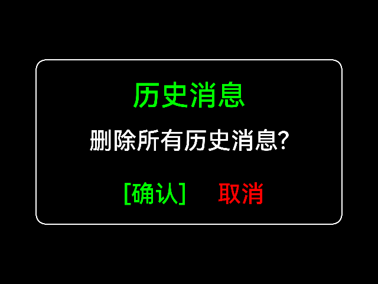
K2/K3 在“确认/取消”之间选择，K4 执行。删除后无法恢复，请谨慎操作。 当保存的消息过多出现卡顿时，可用本功能清理。
10过滤与告警距离
条件过滤 & 通用设置
进入：功能菜单第 2 页 → [7] 条件过滤 & 通用。所有开关选中即生效。
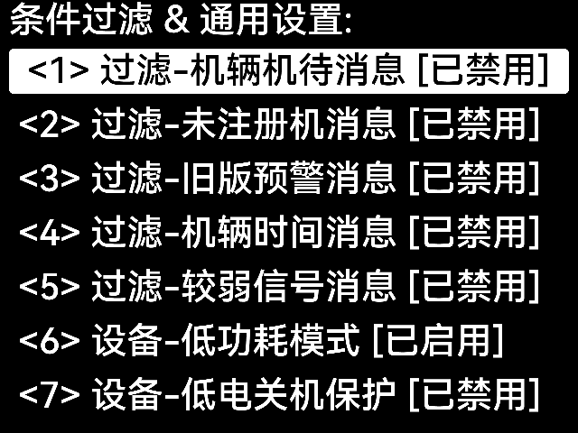
| 设置项 | 作用 | 出厂默认 |
|---|---|---|
| <1> 过滤-机辆机待消息 | 不显示与本作业无关的机辆/机待类消息 | 已禁用 |
| <2> 过滤-未注册机消息 | 不显示未注册车头发出的消息 | 已禁用 |
| <3> 过滤-旧版预警消息 | 只保留新版消息，界面更统一 | 已禁用 |
| <4> 过滤-机辆时间消息 | 不显示时间同步类消息 | 已禁用 |
| <5> 信号强度过滤值 | 低于所选强度的消息不显示，6 档：不过滤 / 五档由弱到强 | 不过滤 |
| <6> 设备-低功耗模式 | 开启后更省电（电池图标带 * 标志） | 已启用 |
| <7> 设备-低电关机保护 | 开启后电量极低时自动关机，保护电池 | 已禁用 |
公里标过滤 & 设置
进入：功能菜单第 2 页 → [8] 公里标过滤 & 设置。
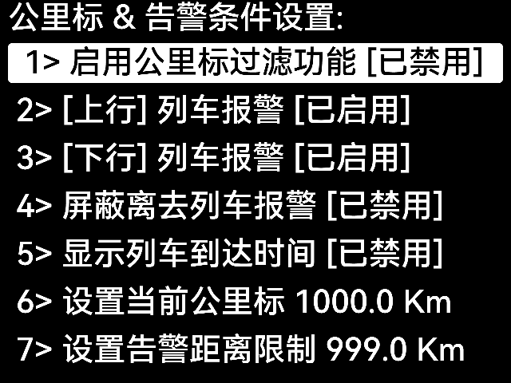
| 设置项 | 作用 | 出厂默认 |
|---|---|---|
| 1> 启用公里标过滤功能 | 总开关。开启后只在“告警距离”范围内提醒，底部显示 [K] | 已禁用 |
| 2> [上行] 列车报警 | 是否对上行来车提醒 | 已启用 |
| 3> [下行] 列车报警 | 是否对下行来车提醒 | 已启用 |
| 4> 屏蔽离去列车报警 | 开启后已经离去的车不再重复提醒 | 已禁用 |
| 5> 显示列车到达时间 | 在消息中显示预计到达时间 | 已禁用 |
| 6> 设置当前公里标 | 设定您本人所处的里程位置（见下方步骤） | 1000.0 K |
| 7> 设置告警距离限制 | 只在设定距离内提醒，共 14 档 | 999 K（不限制） |
告警距离 14 档
设置方法：选中“7> 设置告警距离限制”，每按一次 K4 切换一档，屏幕下方实时显示当前档位。
设置当前公里标（5 位数字输入）
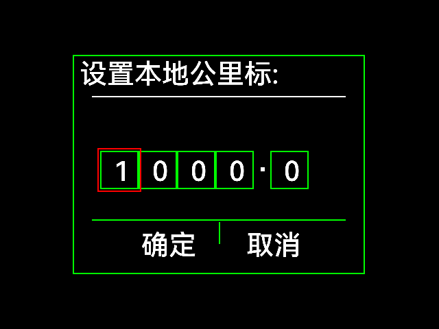
- 选中“6> 设置当前公里标”，按 K4 进入数字输入页。
- 红框默认停在第一位；按 K4 循环调整该位数字（0~9）。
- 按 K2/K3 移动到其他数字位，最后一位为小数点后一位。
- 全部输入完成后，选择“确定”保存并返回。
11系统工具
系统状态监控
进入：功能菜单第 2 页 → [10] 系统状态监控。本页仅供查阅，按 K4 返回。
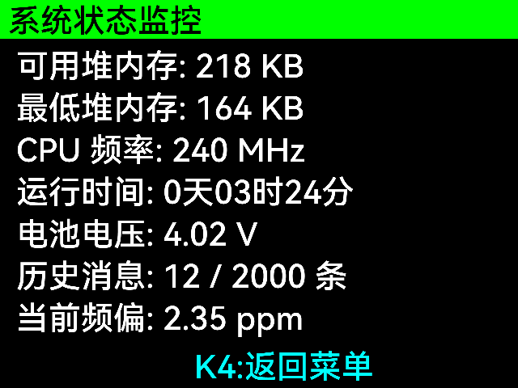
| 项目 | 含义 |
|---|---|
| 可用/最低堆内存 | 设备内存余量与历史最低值，可间接判断运行是否顺畅 |
| 运行时间 | 本次开机后连续运行的时长 |
| 电池电压 / 电量 | 当前电池状态 |
| 历史消息 | 已保存条数 / 2000 条容量 |
| 当前信号偏移 | 供检修参考的信号状态，日常无需关注 |
关于本机
进入：功能菜单第 3 页 → [11] 关于本机，共两页，显示设备名称、型号、固件版本、序列号、内存与消息空间等信息。
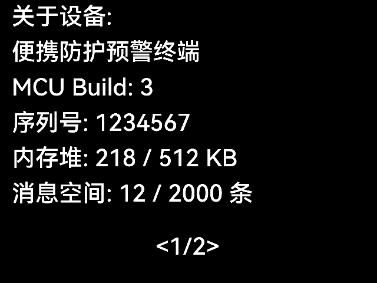
重置全部设置
进入：功能菜单第 3 页 → [13] 重置全部设置。
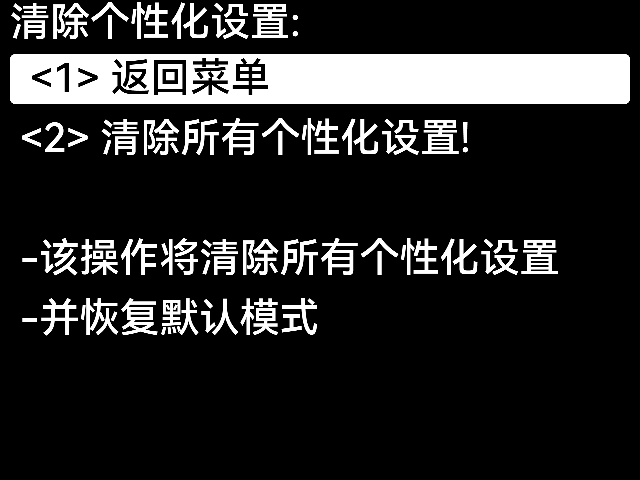
选择“清除所有个性化设置”后，主题、亮度、提示模式、过滤等恢复出厂值， 历史消息不会被删除。设置混乱时可用本功能一键复原。
自动频率校正
进入：功能菜单第 2 页 → [6] 自动频率校正。建议保持开启，有助于稳定接收。
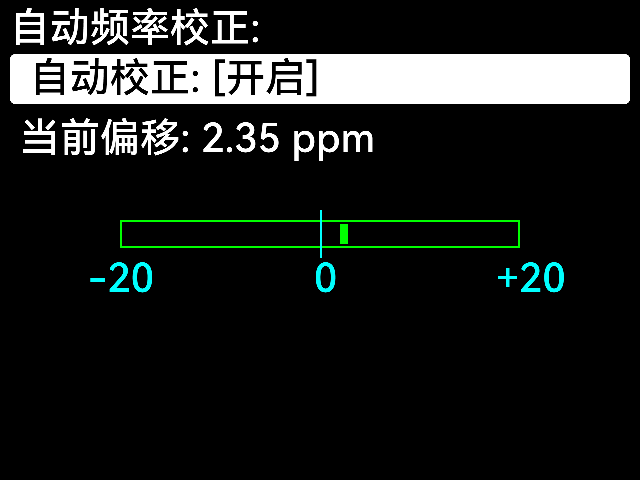
12常见问题 FAQ
列车驶过却没有收到任何消息
可能原因与处理：
- 车头未启用预警电台（特别是动车组，多数情况不开启，以当地动车段规定为准）。
- 设备电量过低——先充电再试。
- 附近有同频干扰——移动到其他位置。
解决：换到开阔位置，确保电量充足，确认所在线路为客货运干线（私有线、专用线、厂内线、地铁城轨可能收不到）。
感觉提醒距离变近了
- 接收位置与来车之间有遮挡（墙体、车辆、山体）。
- 天线松动或未拧紧。
- 附近有同频串扰。
- 车头电台老化、发射功率偏低。
解决：移动到开阔处；检查天线与底座是否紧密连接；保持电量充足、设备温度适宜。
消息出现汉字错别字、同音字或内容不完整
这是远距离接收或同时刻多台车头发射、附近有干扰时的常见现象。
解决：移动到开阔地带；等待车头靠近后信息会自动完整。若持续出现，请检查天线连接。
屏幕连续白屏、闪烁或无法启动
- 电池电压过低，系统无法运行——立即充电。
- 使用环境温度过高——移至阴凉处降温。
解决：及时充电，手动重启，确保在适宜温度下使用。
时间显示错乱
设备时钟受干扰后可能丢失。
解决：用功能菜单 [5] 手动设置时间；随后重启设备，开机时会重新自动对时。若仍不准，重复一次即可。
只显示旧版车次、速度、里程，没有线路和车头编号
这是车头电台未升级、未发送新版消息所致，设备本身正常。
解决：在该地区车头升级后即可显示完整内容；也可到其他地区干线交路测试验证。
收不到动车组/动检的信息
动车组非必要情况不启用预警电台，以各地动车段/所规定为准，属正常现象。
保存的消息越来越多，操作开始卡顿
用功能菜单 [12] 删除历史消息即可恢复流畅。删除后无法恢复，请确认无需回看后再操作。
天线可以更换吗？有什么注意事项？
- 设备接口为“外螺内孔”规格，需购买“内螺内针”接口的天线。
- 请使用 800M/868M 频段的物联网天线，不要购买 2.4G/433M 等其他频段。
- 原装天线已做距离与阻抗适配，一般无需更换。
- 请勿将射频信号源直接接入设备，以免损坏器件。
- 携带时勿将天线直接塞入包中，以免折断连接底座。
电池如何保养才能用得久？
- 电量偏低（屏幕显示“低电量!”）时请及时充电，不要用到自动关机。
- 长期不使用时不要满电存放（会诱发鼓包），并每月充电一次。
- 过放后需连接充电器重新激活，激活时不要同时使用。
- 只用小电流充电，严禁大功率快充。
可以不发出声音/振动吗？
可以。功能菜单 [2] 提示模式切换 → 选“静音”即可完全静默；也可以只选“声音”或只选“震动”。 设置立即生效并自动保存。
屏幕太暗/太刺眼怎么办？
功能菜单 [3] 屏幕 & 息屏时间 → 屏幕亮度，五档可选；也可以换用“浅色模式”主题， 在强光环境下更清晰。同时可缩短背光时间以省电。
屏幕反显（颜色颠倒）怎么恢复？
功能菜单 [3] 屏幕 & 息屏时间 → “开启屏幕反显”项，按 K4 在启用/禁用之间切换即可。
菜单为什么自己退出了？
这是“菜单自动退出”保护，默认 60 秒无操作自动回到监听界面，避免错过新消息。 可在功能菜单 [3] 中改为 30 秒或 120 秒。
底部显示的 [K] [C] [X] 是什么意思？
[K]=公里标过滤已启用；[C]=至少启用了一项消息过滤；[X]=自动频率校正已关闭。 看到它们就知道当前有哪些功能在起作用，不需要处理。
想只看某个距离内的来车提醒
两步：① 功能菜单 [8] → 先“设置当前公里标”；② 开启“启用公里标过滤功能”， 再在“设置告警距离限制”里选合适档位（0.5K~999K 共 14 档）。
上行/下行来车可以只提醒一个方向吗？
可以。功能菜单 [8] → “[上行] 列车报警”“[下行] 列车报警”分别控制，不需要的方向关掉即可。
快捷查看的 5 种模式有什么区别？
只是列表列出的字段不同：M1/M3 偏好看里程，M2/M4 偏好看车头编号，M5 偏好看速度。 在快捷查看页按 K4 循环切换，选好后自动保存。
历史条目索引怎么用？
功能菜单 [9] 历史条目索引，输入 4 位序号（0000~2000），选“确定”直接跳到该条消息。 序号可在快捷查看列表的模式 M1/M2 中看到（每行最左侧数字）。
开机音效可以关掉吗？
可以。功能菜单 [2] 提示模式切换 → 音效设置 → 第 2/2 页 →“开机音效”选择“关”。 同页还可把开机音效风格换成“欢快”或“经典”。
提示模式里为什么没有“音效设置”？
“音效设置”是无源蜂鸣器版本专属。有源蜂鸣器只能发出固定音调的声音，无法演奏旋律， 因此该版本的“提示模式切换”只有 6 项（提示模式、提示长短、提示音规范），声音行为自动处理，属正常设计。 无源版本本页为 7 项，带完整的音效设置子页。详见 6.4。
列车类型显示选“旧版”还是“新版”？
一般保持新版（出厂默认）即可，它按现行《列车运行图编制管理规则》分类，名称更细更准。 当需要对照旧版资料、或习惯旧名称时，可切到旧版；两者只是参考信息，不影响接收。 切换方法：功能菜单 [4] → 第 2/2 页 → <1> 列车类型显示，按 K4 循环。详见 7.3。
类型右侧的彩色徽标是什么？为什么不显示？
那是车次等级标识，用数字（如 350/120）或文字（货/行包）快速标注车次等级，颜色由红到紫对应由高到低。 它只在“列车类型显示 = 新版”且“车次等级标识 = 已启用”时显示：切到旧版或关闭类型显示时自动隐藏； 回送、折返、试验、检测等特殊作业列车本身不显示徽标。详见 7.3。
升级固件后，同一车次的“类型”名称变了
这是因为列车类型分类规则从旧版切换到了新版（铁运〔2026〕74 号），同一车次的名称更简短、号段划分更细 （如“直通高速动车组”→“直通高速动车”）。可随时在功能菜单 [4] → 显示元素中切回旧版对照，不影响消息接收。
每种提示音都能改成高音/低音吗？
可以。功能菜单 [2] → 音效设置 → 第 1/2 页，对按键音、确认音、取消音、返回音、错误音、 上行预警、下行预警分别选择高音/中音/低音/默认，调整时会立即试听。
电量极低时设备自动关机了，正常吗？
正常，这是电池保护。充电后即可重新开机。若希望在极低电量时仍能手动查看消息， 可在功能菜单 [7] 关闭“设备-低电关机保护”（不建议长期关闭）。
夏天车内温度很高，设备会自动关机
这是高温保护，属正常现象。将设备移至阴凉处降温后再开机即可。 请勿将设备留在阳光直射或密闭高温的车内。
屏幕上的“类型”准吗？
“类型”由车次号推算，是扩展参考信息，并非完全准确。 不需要可在功能菜单 [4] → 显示元素 →“列车类型显示”中关闭。
设置乱了，怎么恢复出厂值？
功能菜单第 3 页 → [13] 重置全部设置 → 选择“清除所有个性化设置”。 历史消息不会被删除。
这台设备需要像对讲机那样报备吗？
本设备只接收、不发射。铁路单位作业使用时，请按行业规定向相关部门报备。
保修政策是怎样的？
产品享有一个月保修期（自收货日起算）。保修期内非人为质量问题经检测确认可免费换货。 属特种精密设备，开箱后不支持退货或折价退款。请保留购买凭证与完整包装。
需要贴膜吗？
出厂时包装盒与屏幕已覆保护膜，请先确认功能正常后再移除。 如需贴膜，可自行购买 2.4 英寸屏幕钢化膜，尺寸大多数情况下通用。
13安全与保养
- 本设备为铁路单位作业安全保障使用，行业使用时需向相关部门报备。
- 请尽量使用原装充电线与小电流电源，严禁大功率快充。
- 虽不具备发射功能，使用时仍需远离心脏起搏器、助听器等医疗设备与电磁敏感区域。
- 请勿将设备置于正在发射的大功率射频设备（手台、车载电台、广播电台、雷达）附近，以免驻波损坏内部器件。
- 使用期间，使用者将对发生的任何可能事件及其后果负全部责任。
- 请保留本说明书以备不时之需。
- 设备有基础防尘防潮设计，但不完全防水。请勿浸水、淋雨雪，或置于高湿环境。
- 保持设备干燥、清洁，避免摔落与挤压。
- 本设备非为 7×24 小时连续开机设计，不建议彻夜开机接收。
- 充电时留人值守；发现异常发热、鼓包、异味立即停用并联系售后。
- 温度过高或过低时可能出现电压偏低、电量估算不准、屏幕拖影甚至无法启动，属正常物理现象，改善环境后即可恢复。
14用模拟器练手
不想在真机上试手？打开随本手册一起提供的界面模拟器， 它在网页里 1:1 复刻了设备屏幕与全部菜单，可以随意点、随意设，不会弄坏任何设置。
- 点击屏幕右侧的按键，或直接用键盘 1234（对应 K1~K4）操作。
- 右侧“列车消息”可自定义一条消息并“发送并显示在屏”，观察主界面如何刷新。
- 切换提示模式、主题、亮度，感受不同设置下的界面与提示音。
- 进入“提示模式切换 → 音效设置”，逐类试听高音/中音/低音/默认，观察类型显示的新旧版切换与等级徽标变化。
- “导出屏幕 JPG”可把当前画面存成图片，方便做笔记或培训材料。
- 网页地址后加
#菜单名（如#anc、#time、#snd1）可直接跳到对应界面。
15设置项速查表
全部设置项、可选值与出厂默认值一览。带“立即生效”的选项按 K4 后无需额外保存。
| 菜单 | 设置项 | 可选值 | 出厂默认 |
|---|---|---|---|
| [2] 提示模式切换 | 提示模式 | 静音 / 声音 / 震动 / 声音+震动 | 声音+震动 |
| 提示长短 | 短 / 长 | 短 | |
| 提示音 | 非标 / 国标 | 非标 | |
| 音效设置 · 7 类提示音 | 高音 / 中音 / 低音 / 默认 | 默认 | |
| 音效设置 · 其他提示音 | 高音 / 中音 / 低音 / 默认 | 默认 | |
| 音效设置 · 开机音效 | 开 / 关 | 开 | |
| 音效设置 · 开机音效风格 | 标准 / 欢快 / 经典 | 标准 | |
| [3] 屏幕 & 息屏时间 | 屏幕亮度 | 20/40/60/80/100% | 100% |
| 屏幕背光时间 | 3/5/10/15/30/60 秒 | 10 秒 | |
| 菜单自动退出 | 30/60/120 秒 | 60 秒 | |
| 电池栏信息 | 电池电压 / 预估电量 / 不显示 | 不显示 | |
| 屏幕反显 | 已启用 / 已禁用 | 已启用 | |
| [4] 主题 & 显示元素 | 主题 | 8 款（默认/夜视红/绿色荧幕/蓝色荧幕/浅色/深空蓝/暖金色/紫罗兰） | OwlRF 默认 |
| 列车类型显示 | 已关闭 / 旧版 / 新版 | 新版 | |
| 车次等级标识 | 已启用 / 已禁用 | 已启用 | |
| 信号塔显示 | 已启用 / 已禁用 | 已启用 | |
| [7] 条件过滤 & 通用 | 过滤-机辆机待消息 | 已启用 / 已禁用 | 已禁用 |
| 过滤-未注册机消息 | 已启用 / 已禁用 | 已禁用 | |
| 过滤-旧版预警消息 | 已启用 / 已禁用 | 已禁用 | |
| 过滤-机辆时间消息 | 已启用 / 已禁用 | 已禁用 | |
| 信号强度过滤值 | 不过滤 / 五档由弱到强 | 不过滤 | |
| 设备-低功耗模式 | 已启用 / 已禁用 | 已启用 | |
| 设备-低电关机保护 | 已启用 / 已禁用 | 已禁用 | |
| [8] 公里标过滤 & 设置 | 启用公里标过滤功能 | 已启用 / 已禁用 | 已禁用 |
| [上行] 列车报警 | 已启用 / 已禁用 | 已启用 | |
| [下行] 列车报警 | 已启用 / 已禁用 | 已禁用（上行/下行默认均启用） | |
| 屏蔽离去列车报警 | 已启用 / 已禁用 | 已禁用 | |
| 显示列车到达时间 | 已启用 / 已禁用 | 已禁用 | |
| 设置当前公里标 | 0~9999.9 K | 1000.0 K | |
| 设置告警距离限制 | 0.5/0.5/0.8/1.0/1.5/2.0/3.0/4.0/5.0/8.0/10/20/50/999 K | 999 K | |
| 其他 | 快捷查看显示模式 | M1~M5 | M1 |
| [6] 自动频率校正 | 开启 / 关闭 | 开启 |